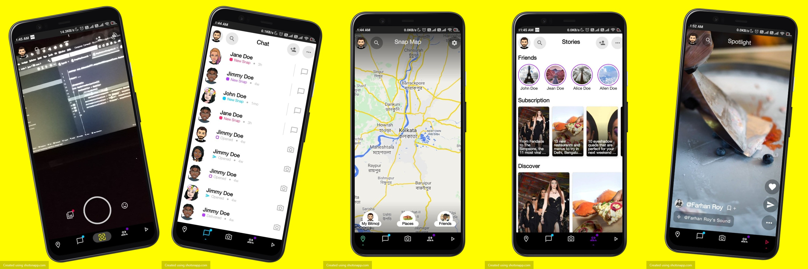

Snapchat Compose Clone👻


Background🌟
Work in progress
This is UI Clone of Snapchat, which is used to show the power of Jetpack Compose. This a personal project with the goal to learn Clean Architecture with Jetpack compose. I have tried to add all the native components like Camera, Mapview and Exoplayer and showcase as an example.
Jetpack Compose is Android’s modern toolkit for building native UI. It simplifies and accelerates UI development on Android. Quickly bring your app to life with less code, powerful tools, and intuitive Kotlin APIs.
Dependencies & References⚡
General Dependencies
- Compose-version: 1.1.1
Jetpack Compose is Android’s modern toolkit for building native UI. It simplifies and accelerates UI development on Android. Quickly bring your app to life with less code, powerful tools, and intuitive Kotlin APIs. - Gradle-version:7.1.2
- Kotlin-version:1.6.10
Navigation🚀
- androidx.navigation:navigation-compose:2.5.0-alpha03
The Navigation component provides support for Jetpack Compose applications. You can navigate between composables while taking advantage of the Navigation component’s infrastructure and features. - Reference https://blog.mindorks.com/jetpack-compose-navigation
Camara📸
camerax_version = "1.1.0-beta02"Google Map🗺
- com.google.maps.android:android-maps-utils:2.2.3, com.google.android.libraries.maps:maps:3.1.0-beta, com.google.maps.android:maps-v3-ktx:2.2.0, androidx.fragment:fragment-ktx:1.4.0
- References
Video Player📽
- com.google.android.exoplayer:exoplayer:2.17.1
ExoPlayer is an application level media player for Android. It provides an alternative to Android’s MediaPlayer API for playing audio and video both locally and over the Internet. ExoPlayer supports features not currently supported by Android’s MediaPlayer API, including DASH and SmoothStreaming adaptive playbacks. - References
Coil🍥
- io.coil-kt:coil-compose:1.4.0
Image loading for Android backed by Kotlin Coroutines. - References
Hiding Secret Key🔑
- com.google.android.libraries.mapsplatform.secrets-gradle-plugin:2.0.1
This Gradle plugin reads secrets from a properties file not checked into version control, such as local.properties, and expose those properties as variables in the Gradle-generated BuildConfig class and in the Android manifest file. - References
Accompanist✨
- com.google.accompanist:accompanist-permissions, com.google.accompanist:accompanist-pager:0.19.0
Accompanist is a group of libraries that aim to supplement Jetpack Compose with features that are commonly required by developers but not yet available. - References
Dokka and KDoc🚀
- org.jetbrains.dokka:dokka-gradle-plugin:1.6.10
Dokka is a documentation engine for Kotlin, performing the same function as javadoc for Java. Just like Kotlin itself, Dokka fully supports mixed-language Java/Kotlin projects. It understands standard Javadoc comments in Java files and KDoc comments in Kotlin files, and can generate documentation in multiple formats including standard Javadoc, HTML and Markdown. - References
Detekt🐱🏍
- io.gitlab.arturbosch.detekt:1.18.0
Static code analysis for Kotlin - References
Clean architecture
I am still learing and understanding clean architecture so it might be perfectly correct
In Clean Architecture, instead of relying on Models, you'll communicate with Interactors from the Use Case layer. This layer contains the user interface related code, powered by Android Jetpack!
The outer circle represents the concrete mechanisms that are specific to the platform such as networking and database access. Moving inward, each circle is more abstract and higher-level. The center circle is the most abstract and contains business logic, which doesn’t rely on the platform or the framework you’re using.

Refer here for more details and description:
- https://www.raywenderlich.com/3595916-clean-architecture-tutorial-for-android-getting-started
- https://medium.com/android-dev-hacks/detailed-guide-on-android-clean-architecture-9eab262a9011
- https://medium.com/swlh/clean-architecture-in-android-a-beginner-approach-be0ce00d806b
Want to Contribute ?
Awesome! If you want to contribute to this project, you're always welcome! Have any questions, doubts or want to present your opinions, views? You're always welcome. You can mail me at debanshudatta123@gmail.com or make an issue. Looking for contributors! Don't be shy. 😁 Feel free to open issues/pull requests to help me improve this project.
- When reporting a new Issue, make sure to attach Screenshots, Videos or GIFs of the problem you are reporting.
- When submitting a new PR, make sure tests are all green. Write new tests if necessary.
Contributors
License
The Snapchat name, artwork, trademark are all property of Snap Inc. This project is provided for educational purposes only. It is not affiliated with and has not been approved by Snap Inc.